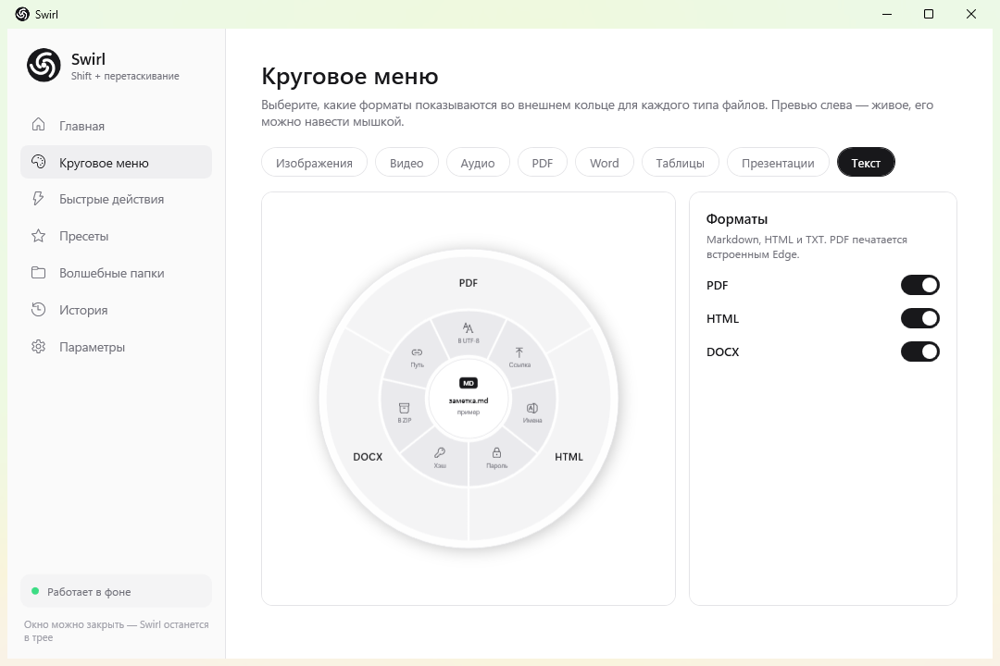
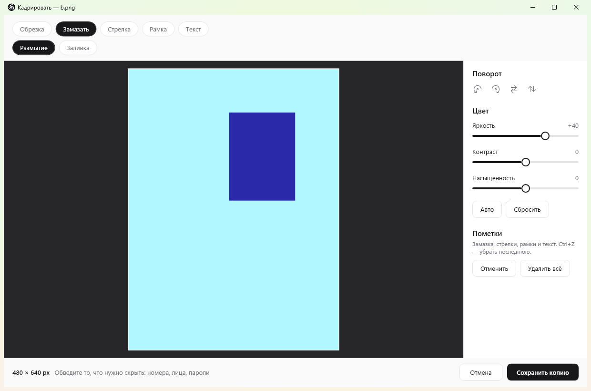
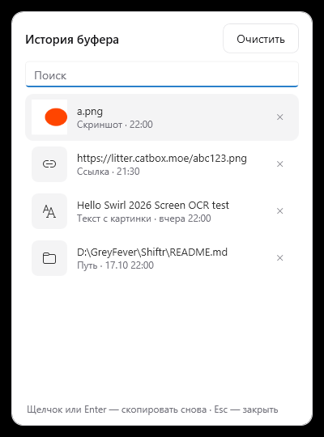
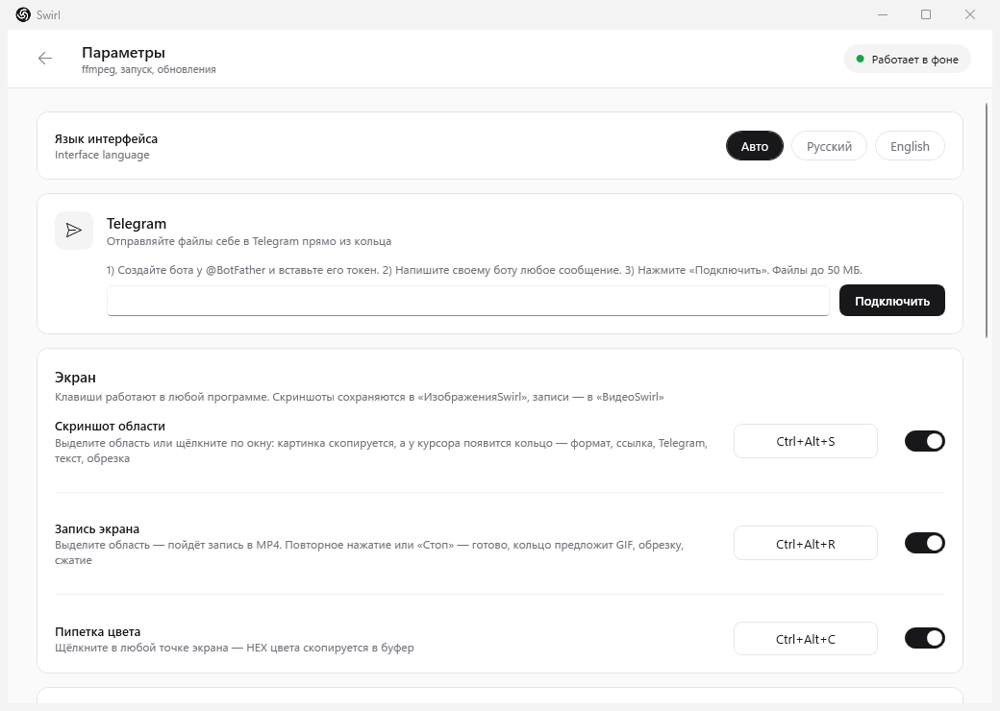

Conversion
Images, video, audio and documents. Drop on a format, get a file.
A radial menu for files on Windows. Drag a file in Explorer, press Shift — a ring opens at your cursor. Drop it on a slice. Done.
Animation: the black Swirl Island at the top of the screen expands into a panel with Region, Full screen, Text from screen, Color picker and Record screen buttons, then shows a recording in progress and a copied color.
No windows, no ten-item menus. The ring picks the right actions for each file type.
Conversion, editing, screenshots, archives and clipboard — no browser, no uploads, no subscription.
Images, video, audio and documents. Drop on a format, get a file.
Crop, rotate, brightness, arrows, boxes, text. “Blur it out” hides plates, faces and passwords.
Capture a region or a window — straight to the clipboard and into the ring. Plus recording, a color picker and OCR.
A black pill at the top of the screen, like Dynamic Island. Hover it and a panel opens with everything at hand.
Drag a file to the top edge and it parks in the Island. Later, pull it out into any folder or chat.
Archives, duplicates, renaming, tidy folders. And sending files where they need to go.
Everything Swirl copied: screenshots, colors, links, text. Copy it again in one click.
The small things that make it hard to go back.
A black pill at the top of the screen. Hover and it opens into a panel. Move away and it shrinks back into a slim strip that stays out of your way.
Ring settings, the editor and clipboard history in one clean window. A dark theme is there too.




One-click install. No admin rights, no .NET. Updates itself.
SwirlSetup.exe · latest release from GitHub